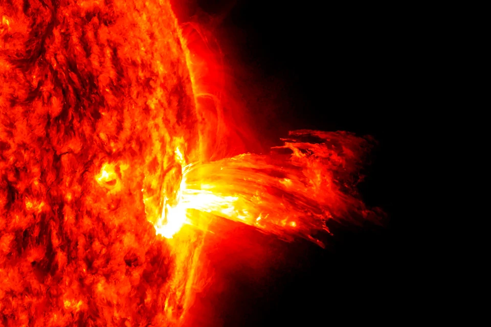
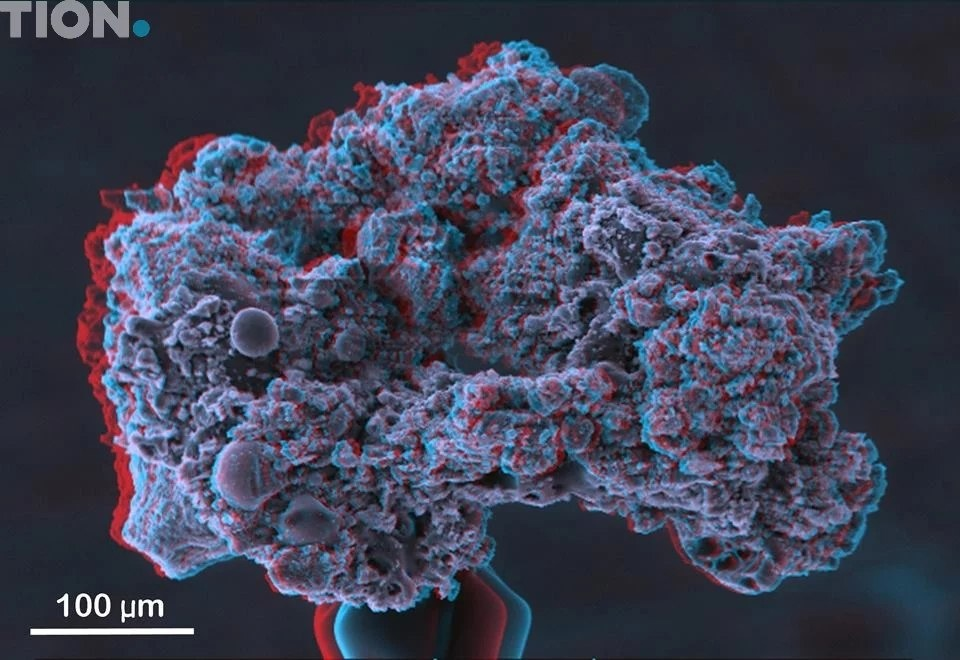

Новая эра в исследовании Марса
NASA успешно запустило новый марсоход, способный бурить на глубину до 10 метров. В этом видео рассказывается о его ключевых возможностях и ближайших научных целях.
Лента новостей

NASA публикует карту воды на Луне
20 марта 2025
Миссия Artemis предоставила ценные данные о залежах водяного льда.
Одинокая черная дыра впервые зафиксирована
24 марта 2025
Астрономы нашли блуждающую черную дыру без звезды-компаньона.

Марсоход прошёл полевые испытания в Исландии
22 марта 2025
Новый бур тестируют в вулканических ландшафтах.

Диагностика в изоляции с помощью спутников
21 марта 2025
Новые методы позволяют следить за здоровьем космонавтов в реальном времени.

Фитопланктоны у Сахалина замечены из космоса
25 марта 2025
Спутники зафиксировали массовое цветение в водах Охотского моря.

Ожидается мощная солнечная буря
26 марта 2025
Ученые предупреждают о возможных сбоях связи и навигации.

Европейский ровер начал исследование лунной пыли
26 марта 2025
Луноход изучает электростатические свойства реголита.

Новый космический телескоп обнаружил 12 экзопланет
27 марта 2025
Некоторые планеты потенциально пригодны для жизни.
NASA публикует карту воды на Луне
20 марта 2025
Миссия Artemis предоставила ценные данные о залежах водяного льда.
Одинокая черная дыра впервые зафиксирована
24 марта 2025
Астрономы нашли блуждающую черную дыру без звезды-компаньона.

Марсоход прошёл полевые испытания в Исландии
22 марта 2025
Новый бур тестируют в вулканических ландшафтах.
Диагностика в изоляции с помощью спутников
21 марта 2025
Новые методы позволяют следить за здоровьем космонавтов в реальном времени.
Фитопланктоны у Сахалина замечены из космоса
25 марта 2025
Спутники зафиксировали массовое цветение в водах Охотского моря.
Ожидается мощная солнечная буря
26 марта 2025
Ученые предупреждают о возможных сбоях связи и навигации.
Европейский ровер начал исследование лунной пыли
26 марта 2025
Луноход изучает электростатические свойства реголита.
Новый космический телескоп обнаружил 12 экзопланет
27 марта 2025
Некоторые планеты потенциально пригодны для жизни.
Поcледние новости:
- 15.05 Ученые выяснили, сколько данных нужно для искусственного интеллекта
- 15.05 В России наладят выпуск рассасывающихся имплантатов для челюстно-лицевой хирургии
- 15.05 В Перми синтезировали новые обезболивающие вещества для анальгетиков
- 15.05 Белорусские инженеры создали рельсовый беспилотник с рекордно низким сопротивлением
- 15.05 Новый метод позволит контролировать качество нанокомпозитов на всех этапах